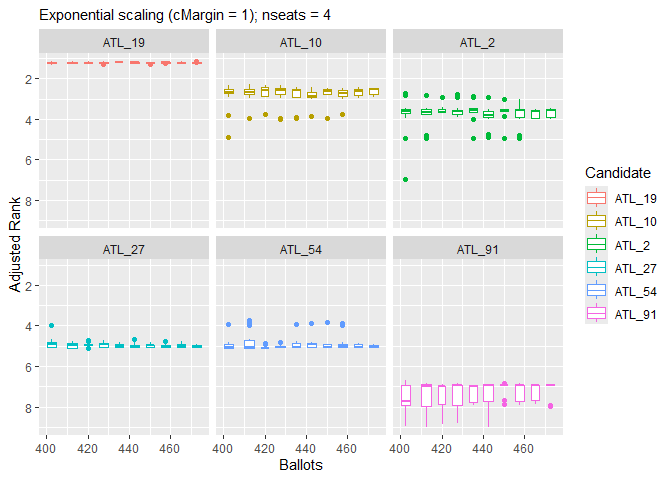
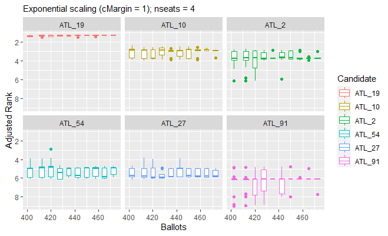
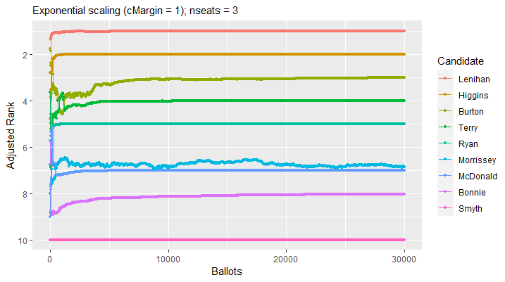

The goals of SafeVote are to investigate the safety of announcing preliminary results from an election, and to allow experimental study of the safety of a complete ranking of all candidates (as in a party list) that is derived from a small-scale election with preferential ballots.
Installation
You can install the development version of SafeVote from GitHub with:
# install.packages("devtools")
devtools::install_github("cthombor/SafeVote")Example
This mod of vote.2.3-2 reports the margins of victory in an election.
The value of the safety parameter will affect the completeness of the safeRank ordering of the candidates. Setting safety = 0 will cause safeRank to be a total ranking of the candidates, except in the rare case that there is an exact tie. The “fuzz” on the vote-differentials in a safeRank clustering of the candidates is , where is the value of the safety parameter and is the number of ballots.
library(SafeVote)
stv(food_election,quiet=TRUE)$rankingTable
#> Rank Margin Candidate Elected SafeRank
#> 1 1 8.0000000 Chocolate x 1
#> 2 2 0.5548889 Strawberries x 2
#> 3 3 1.2225556 Oranges 2
#> 4 4 0.7774444 Sweets 2
#> 5 5 NA Pears 2
stv(food_election,quiet=TRUE,safety=0)$rankingTable
#> Rank Margin Candidate Elected SafeRank
#> 1 1 8.0000000 Chocolate x 1
#> 2 2 0.5548889 Strawberries x 2
#> 3 3 1.2225556 Oranges 3
#> 4 4 0.7774444 Sweets 4
#> 5 5 NA Pears 5Three safety-testing routines are supplied, to support experimental study of the stochastic behaviour of ballot counting methods.
testFraction
testFraction draws a series of independent samples from a ballot box. Stochastic experimentation with this method will, we hope, help future researchers develop advice, to election officials, on whether a preliminary count is sufficiently stable for them to make a preliminary announcement of the result – without undue risk of having to retract their announcement as had occurred in Hastings NZ in October 2022. As seen below, in the case of the yale_ballots dataset, 400 of the 479 votes were sufficient to establish candidates ATL_19, ATL_10, and ATL_2 as being very likely to be three of the four winners. The balloting was extremely close for the fourth seat. ATL_54 was the eventual winner; but ATL_54 and ATL_27 are ranked approximately 5= as the last 50 ballots are counted. The STV variant used in this experiment has fractional vote-transfers and a Hare quota.
library(SafeVote)
xrHare <- testFraction(yale_ballots,arep=9,ainc=5,astart=400,
countArgs=list(nseats=4,safety=0.0,quota.hare=TRUE))
#> Progress in counting stv ballots:
#> 0.7%, 1.4%, 2.1%, 2.8%, 3.5%, 4.2%, 4.9%, 5.6%, 6.2%, 6.9%,
#> 7.6%, 8.3%, 9%, 9.7%, 10.4%, 11.1%, 11.8%, 12.5%, 13.2%, 13.9%,
#> 14.6%, 15.3%, 16%, 16.7%, 17.4%, 18.1%, 18.8%, 19.4%, 20.1%, 20.8%,
#> 21.5%, 22.2%, 22.9%, 23.6%, 24.3%, 25%, 25.7%, 26.4%, 27.1%, 27.8%,
#> 28.5%, 29.2%, 29.9%, 30.6%, 31.2%, 31.9%, 32.6%, 33.3%, 34%, 34.7%,
#> 35.4%, 36.1%, 36.8%, 37.5%, 38.2%, 38.9%, 39.6%, 40.3%, 41%, 41.7%,
#> 42.4%, 43.1%, 43.8%, 44.4%, 45.1%, 45.8%, 46.5%, 47.2%, 47.9%, 48.6%,
#> 49.3%, 50%, 50.7%, 51.4%, 52.1%, 52.8%, 53.5%, 54.2%, 54.9%, 55.6%,
#> 56.2%, 56.9%, 57.6%, 58.3%, 59%, 59.7%, 60.4%, 61.1%, 61.8%, 62.5%,
#> 63.2%, 63.9%, 64.6%, 65.3%, 66%, 66.7%, 67.4%, 68.1%, 68.8%, 69.4%,
#> 70.1%, 70.8%, 71.5%, 72.2%, 72.9%, 73.6%, 74.3%, 75%, 75.7%, 76.4%,
#> 77.1%, 77.8%, 78.5%, 79.2%, 79.9%, 80.6%, 81.2%, 81.9%, 82.6%, 83.3%,
#> 84%, 84.7%, 85.4%, 86.1%, 86.8%, 87.5%, 88.2%, 88.9%, 89.6%, 90.3%,
#> 91%, 91.7%, 92.4%, 93.1%, 93.8%, 94.4%, 95.1%, 95.8%, 96.5%, 97.2%,
#> 97.9%, 98.6%, 99.3%, 100%
#>
#> Results of testFraction at 2026-03-23 21:00:54
#>
#> Dataset = yale_ballots, countMethod = stv, rankMethod = safeRank
#>
#> | | nseats| safety| quota.hare|
#> |:---------|------:|------:|----------:|
#> |countArgs | 4| 0| TRUE|
#>
#>
#> | | astart| ainc| arep|
#> |:------------|------:|----:|----:|
#> |otherFactors | 400| 5| 9|
#>
#> Experiment ID, number of ballots in simulated election, ranks, winning margins:
#>
#> |exptID | nBallots| ATL_16| ATL_27| ATL_14| ATL_54| ATL_87| ATL_1| ATL_26| ATL_29| ATL_6| ATL_25| ATL_93| ATL_30| ATL_88| ATL_21| ATL_10| ATL_34| ATL_7| ATL_13| ATL_9| ATL_2| ATL_11| ATL_36| ATL_31| ATL_126| ATL_18| ATL_89| ATL_19| ATL_5| ATL_90| ATL_17| ATL_32| ATL_91| ATL_23| ATL_15| ATL_28| ATL_33| ATL_3| ATL_92| ATL_4| ATL_22| ATL_8| ATL_24| ATL_35| ATL_20| m.ATL_16| m.ATL_27| m.ATL_14| m.ATL_54| m.ATL_87| m.ATL_1| m.ATL_26| m.ATL_29| m.ATL_6| m.ATL_25| m.ATL_93| m.ATL_30| m.ATL_88| m.ATL_21| m.ATL_10| m.ATL_34| m.ATL_7| m.ATL_13| m.ATL_9| m.ATL_2| m.ATL_11| m.ATL_36| m.ATL_31| m.ATL_126| m.ATL_18| m.ATL_89| m.ATL_19| m.ATL_5| m.ATL_90| m.ATL_17| m.ATL_32| m.ATL_91| m.ATL_23| m.ATL_15| m.ATL_28| m.ATL_33| m.ATL_3| m.ATL_92| m.ATL_4| m.ATL_22| m.ATL_8| m.ATL_24| m.ATL_35| m.ATL_20|
#> |:------|--------:|------:|------:|------:|------:|------:|-----:|------:|------:|-----:|------:|------:|------:|------:|------:|------:|------:|-----:|------:|-----:|-----:|------:|------:|------:|-------:|------:|------:|------:|-----:|------:|------:|------:|------:|------:|------:|------:|------:|-----:|------:|-----:|------:|-----:|------:|------:|------:|--------:|----------:|--------:|---------:|--------:|-------:|--------:|--------:|-------:|--------:|--------:|--------:|--------:|--------:|---------:|--------:|-------:|--------:|-------:|---------:|--------:|--------:|--------:|---------:|--------:|--------:|--------:|-------:|--------:|--------:|--------:|--------:|--------:|--------:|--------:|--------:|-------:|--------:|-------:|--------:|-------:|--------:|--------:|--------:|
#> |QCY1 | 400| 17| 4| 26| 5| 30| 20| 22| 13| 6| 9| 14| 33| 35| 34| 2| 18| 12| 39| 31| 3| 24| 27| 10| 21| 25| 28| 1| 32| 37| 23| 15| 7| 16| 43| 29| 38| 8| 36| 44| 19| 41| 40| 42| 11| 1| 8.0370247| 1| 45.296197| 0| 1| 0| 0| 0| 0| 0| 0| 0| 0| 6.148099| 1| 1| 0| 0| 7.677727| 1| 0| 3| 1| 1| 0| 31| 1| 0| 0| 1| 8| 1| 1| 0| 1| 3| 0| 0| 1| 0| 1| 0| 1|
#> |QCY2 | 405| 23| 4| 27| 5| 26| 19| 18| 16| 6| 10| 13| 34| 28| 35| 2| 20| 12| 29| 31| 3| 24| 25| 11| 32| 22| 40| 1| 30| 38| 21| 14| 7| 15| 41| 37| 39| 8| 36| 43| 17| 33| 44| 42| 9| 0| 5.0187250| 0| 46.065537| 1| 0| 0| 1| 4| 0| 0| 0| 1| 0| 7.074900| 1| 1| 0| 0| 13.852629| 2| 0| 1| 1| 0| 0| 29| 1| 0| 1| 3| 6| 1| 0| 0| 1| 3| 0| 0| 2| 0| 0| 1| 0|
#> |QCY3 | 410| 18| 4| 33| 5| 34| 21| 20| 16| 7| 10| 17| 40| 27| 29| 2| 30| 14| 25| 28| 3| 36| 19| 12| 23| 24| 26| 1| 35| 38| 15| 13| 6| 22| 43| 37| 32| 8| 31| 44| 11| 39| 41| 42| 9| 0| 3.2790000| 0| 49.279000| 0| 0| 1| 0| 2| 0| 2| 0| 0| 0| 12.325500| 0| 2| 1| 0| 13.281963| 0| 1| 3| 2| 1| 0| 29| 0| 1| 1| 1| 3| 0| 1| 0| 0| 2| 0| 0| 1| 0| 1| 0| 0|
#> |QCY4 | 415| 18| 4| 27| 5| 37| 17| 19| 14| 12| 7| 13| 29| 30| 32| 2| 24| 10| 25| 31| 3| 21| 28| 20| 22| 23| 34| 1| 41| 40| 16| 11| 6| 26| 42| 35| 36| 8| 33| 44| 15| 38| 39| 43| 9| 2| 2.4223333| 0| 50.362000| 1| 0| 0| 2| 1| 1| 1| 1| 1| 0| 15.181000| 2| 1| 0| 0| 6.997179| 0| 1| 1| 1| 0| 0| 30| 0| 1| 1| 1| 1| 0| 0| 0| 0| 5| 0| 0| 0| 0| 0| 2| 0|
#> |QCY5 | 420| 17| 5| 29| 4| 18| 20| 21| 13| 6| 7| 12| 34| 35| 39| 2| 22| 15| 28| 30| 3| 24| 26| 10| 27| 23| 33| 1| 31| 40| 25| 11| 8| 16| 43| 36| 37| 9| 32| 44| 19| 38| 41| 42| 14| 0| 46.7583258| 0| 1.915742| 1| 1| 0| 0| 2| 2| 1| 1| 0| 0| 2.252775| 2| 3| 0| 0| 9.211592| 1| 0| 2| 1| 0| 0| 33| 1| 1| 0| 1| 3| 1| 1| 0| 1| 3| 0| 0| 1| 0| 0| 0| 0|
#> |QCY6 | 425| 19| 4| 34| 5| 26| 17| 23| 15| 7| 9| 13| 35| 29| 41| 2| 28| 12| 27| 38| 3| 25| 20| 10| 22| 24| 30| 1| 31| 37| 16| 14| 6| 21| 42| 32| 33| 8| 36| 43| 18| 39| 40| 44| 11| 1| 2.7082917| 0| 51.416583| 1| 0| 1| 0| 5| 0| 3| 1| 0| 0| 16.885365| 0| 2| 0| 0| 9.215161| 1| 1| 2| 1| 0| 0| 34| 0| 1| 1| 1| 3| 0| 1| 0| 0| 1| 0| 0| 1| 0| 1| 0| 2|
#> |QCY7 | 430| 15| 4| 30| 5| 31| 20| 22| 16| 7| 9| 17| 41| 34| 33| 2| 19| 12| 23| 29| 3| 24| 25| 11| 27| 26| 38| 1| 28| 35| 21| 14| 6| 13| 42| 36| 37| 8| 32| 44| 18| 40| 39| 43| 10| 1| 0.3625714| 0| 51.362571| 1| 1| 0| 0| 6| 3| 1| 0| 0| 0| 18.362571| 2| 1| 0| 0| 10.862058| 0| 1| 2| 1| 0| 0| 31| 1| 0| 2| 0| 2| 2| 0| 0| 1| 2| 1| 0| 1| 0| 1| 1| 0|
#> |QCY8 | 435| 16| 4| 28| 5| 25| 18| 21| 14| 6| 9| 15| 31| 34| 40| 2| 17| 12| 27| 29| 3| 26| 24| 11| 35| 23| 37| 1| 30| 38| 19| 13| 7| 22| 43| 33| 32| 8| 36| 44| 20| 39| 41| 42| 10| 2| 2.2712447| 0| 50.813734| 0| 0| 1| 0| 2| 4| 0| 1| 1| 0| 14.452075| 1| 1| 1| 0| 15.298853| 1| 0| 3| 0| 0| 0| 37| 0| 1| 0| 2| 5| 1| 1| 0| 0| 2| 0| 0| 1| 0| 1| 0| 1|
#> |QCY9 | 440| 14| 4| 29| 5| 33| 20| 21| 15| 6| 9| 16| 27| 40| 34| 2| 26| 13| 25| 31| 3| 23| 18| 11| 35| 24| 30| 1| 28| 37| 17| 12| 7| 22| 42| 32| 38| 8| 36| 44| 19| 39| 43| 41| 10| 1| 6.2119239| 0| 50.635772| 1| 1| 1| 0| 4| 2| 1| 1| 1| 0| 14.353207| 1| 1| 0| 0| 8.747207| 1| 2| 2| 0| 0| 1| 37| 0| 0| 1| 1| 6| 0| 0| 0| 1| 1| 0| 0| 0| 0| 1| 0| 2|
#> |QCY10 | 445| 18| 4| 30| 5| 24| 22| 20| 14| 6| 9| 13| 34| 36| 40| 2| 29| 12| 26| 35| 3| 23| 19| 11| 28| 25| 31| 1| 27| 37| 21| 15| 7| 16| 43| 38| 33| 8| 32| 44| 17| 39| 41| 42| 10| 0| 4.0172069| 0| 53.051621| 1| 1| 0| 1| 2| 2| 1| 0| 0| 0| 11.028678| 0| 1| 0| 0| 11.926809| 0| 2| 5| 1| 1| 1| 29| 0| 0| 1| 1| 7| 2| 1| 1| 0| 1| 0| 0| 0| 0| 1| 0| 0|
#> ...
#>
#>
#> | |exptID | nBallots| ATL_16| ATL_27| ATL_14| ATL_54| ATL_87| ATL_1| ATL_26| ATL_29| ATL_6| ATL_25| ATL_93| ATL_30| ATL_88| ATL_21| ATL_10| ATL_34| ATL_7| ATL_13| ATL_9| ATL_2| ATL_11| ATL_36| ATL_31| ATL_126| ATL_18| ATL_89| ATL_19| ATL_5| ATL_90| ATL_17| ATL_32| ATL_91| ATL_23| ATL_15| ATL_28| ATL_33| ATL_3| ATL_92| ATL_4| ATL_22| ATL_8| ATL_24| ATL_35| ATL_20| m.ATL_16| m.ATL_27| m.ATL_14| m.ATL_54| m.ATL_87| m.ATL_1| m.ATL_26| m.ATL_29| m.ATL_6| m.ATL_25| m.ATL_93| m.ATL_30| m.ATL_88| m.ATL_21| m.ATL_10| m.ATL_34| m.ATL_7| m.ATL_13| m.ATL_9| m.ATL_2| m.ATL_11| m.ATL_36| m.ATL_31| m.ATL_126| m.ATL_18| m.ATL_89| m.ATL_19| m.ATL_5| m.ATL_90| m.ATL_17| m.ATL_32| m.ATL_91| m.ATL_23| m.ATL_15| m.ATL_28| m.ATL_33| m.ATL_3| m.ATL_92| m.ATL_4| m.ATL_22| m.ATL_8| m.ATL_24| m.ATL_35| m.ATL_20|
#> |:---|:------|--------:|------:|------:|------:|------:|------:|-----:|------:|------:|-----:|------:|------:|------:|------:|------:|------:|------:|-----:|------:|-----:|-----:|------:|------:|------:|-------:|------:|------:|------:|-----:|------:|------:|------:|------:|------:|------:|------:|------:|-----:|------:|-----:|------:|-----:|------:|------:|------:|--------:|----------:|--------:|----------:|--------:|-------:|--------:|--------:|-------:|--------:|--------:|--------:|--------:|--------:|---------:|--------:|-------:|--------:|-------:|---------:|--------:|--------:|--------:|---------:|--------:|--------:|--------:|-------:|--------:|--------:|--------:|--------:|--------:|--------:|--------:|--------:|-------:|--------:|-------:|--------:|-------:|--------:|--------:|--------:|
#> |135 |QCY135 | 430| 17| 5| 27| 4| 23| 19| 21| 15| 7| 8| 14| 39| 29| 33| 2| 22| 12| 26| 32| 3| 24| 30| 11| 31| 25| 35| 1| 28| 36| 16| 13| 6| 20| 43| 41| 37| 9| 34| 44| 18| 38| 40| 42| 10| 1| 51.4015618| 0| 0.8539775| 1| 0| 0| 0| 6| 1| 1| 0| 0| 0| 4.000000| 0| 0| 0| 0| 2.142816| 0| 0| 2| 2| 2| 0| 30| 1| 0| 1| 1| 1| 2| 1| 1| 1| 1| 0| 0| 1| 0| 0| 0| 3|
#> |136 |QCY136 | 435| 17| 5| 37| 4| 32| 20| 19| 15| 7| 8| 14| 39| 28| 35| 3| 23| 11| 25| 34| 2| 36| 33| 12| 22| 24| 27| 1| 26| 40| 16| 13| 6| 21| 43| 30| 31| 9| 29| 44| 18| 38| 41| 42| 10| 2| 49.7141429| 1| 5.6154615| 0| 0| 0| 0| 3| 2| 2| 0| 0| 0| 1.292797| 1| 0| 2| 0| 2.000000| 0| 0| 2| 1| 0| 0| 34| 1| 0| 1| 1| 1| 1| 1| 0| 0| 2| 0| 0| 1| 0| 1| 0| 1|
#> |137 |QCY137 | 440| 13| 5| 39| 4| 27| 19| 20| 16| 7| 9| 14| 34| 29| 35| 2| 28| 11| 25| 31| 3| 24| 22| 12| 26| 23| 37| 1| 30| 38| 17| 15| 6| 21| 43| 33| 32| 8| 36| 44| 18| 40| 41| 42| 10| 1| 50.7095484| 1| 2.7043548| 1| 1| 0| 1| 5| 3| 0| 1| 0| 0| 4.000000| 0| 0| 0| 0| 4.069522| 0| 2| 3| 0| 0| 0| 31| 1| 0| 1| 1| 1| 0| 1| 0| 0| 4| 0| 0| 1| 0| 1| 0| 1|
#> |138 |QCY138 | 445| 18| 4| 28| 5| 24| 19| 20| 13| 6| 10| 15| 35| 40| 39| 2| 30| 12| 27| 34| 3| 25| 21| 11| 26| 23| 31| 1| 29| 36| 17| 14| 7| 22| 43| 33| 37| 8| 32| 44| 16| 38| 41| 42| 9| 2| 1.0170114| 0| 55.0396932| 1| 1| 0| 0| 3| 1| 2| 1| 0| 0| 13.045364| 0| 2| 0| 0| 13.473490| 0| 1| 2| 1| 0| 1| 30| 1| 0| 0| 1| 8| 1| 1| 0| 1| 1| 0| 0| 0| 0| 1| 0| 0|
#> |139 |QCY139 | 450| 17| 4| 26| 5| 28| 21| 19| 14| 7| 8| 15| 37| 32| 38| 2| 18| 12| 29| 33| 3| 25| 27| 10| 23| 24| 31| 1| 30| 41| 22| 13| 6| 16| 42| 35| 36| 11| 34| 44| 20| 39| 40| 43| 9| 0| 1.1086413| 0| 55.1520978| 1| 1| 0| 0| 4| 5| 0| 1| 1| 1| 10.043456| 1| 1| 0| 0| 13.080748| 2| 0| 1| 2| 0| 0| 31| 0| 0| 0| 3| 2| 3| 1| 0| 0| 1| 0| 0| 0| 1| 0| 1| 1|
#> |140 |QCY140 | 455| 14| 4| 29| 5| 25| 20| 19| 16| 6| 9| 15| 39| 34| 40| 2| 28| 12| 27| 31| 3| 24| 21| 11| 26| 23| 35| 1| 30| 37| 18| 13| 7| 22| 43| 32| 33| 8| 36| 44| 17| 38| 41| 42| 10| 1| 6.1105053| 0| 52.4972737| 0| 0| 0| 3| 1| 4| 1| 0| 1| 0| 12.331516| 0| 2| 0| 0| 14.083862| 0| 1| 2| 1| 0| 0| 37| 1| 1| 2| 1| 9| 1| 1| 0| 0| 1| 0| 0| 0| 0| 1| 0| 1|
#> |141 |QCY141 | 460| 15| 5| 30| 4| 25| 19| 21| 17| 7| 8| 13| 37| 32| 38| 2| 28| 12| 27| 33| 3| 24| 20| 11| 26| 23| 31| 1| 29| 39| 22| 14| 6| 16| 43| 35| 36| 9| 34| 44| 18| 40| 41| 42| 10| 0| 54.3828511| 0| 1.8085745| 0| 0| 0| 1| 2| 1| 1| 1| 1| 0| 4.968096| 0| 2| 0| 0| 3.312717| 0| 2| 1| 1| 0| 0| 29| 1| 1| 1| 1| 2| 1| 1| 0| 0| 2| 0| 0| 3| 0| 1| 0| 3|
#> |142 |QCY142 | 465| 17| 5| 29| 4| 25| 19| 22| 14| 7| 8| 13| 36| 32| 40| 2| 28| 11| 27| 37| 3| 24| 20| 15| 26| 23| 31| 1| 30| 38| 21| 12| 6| 16| 43| 34| 35| 9| 33| 44| 18| 39| 41| 42| 10| 1| 56.1275319| 0| 2.9362340| 0| 0| 1| 0| 5| 1| 0| 1| 0| 0| 4.010628| 0| 1| 0| 0| 1.178913| 0| 1| 1| 1| 0| 0| 29| 1| 1| 1| 1| 1| 0| 1| 0| 0| 2| 0| 0| 3| 0| 1| 0| 3|
#> |143 |QCY143 | 470| 18| 4| 28| 5| 19| 20| 21| 15| 7| 8| 13| 37| 32| 38| 2| 23| 12| 27| 33| 3| 25| 30| 11| 26| 24| 31| 1| 29| 39| 16| 14| 6| 22| 43| 36| 35| 9| 34| 44| 17| 40| 41| 42| 10| 2| 1.2295306| 0| 57.2677857| 1| 1| 0| 1| 3| 1| 1| 1| 1| 0| 16.153020| 1| 2| 0| 0| 12.688118| 0| 1| 2| 2| 1| 0| 33| 0| 1| 1| 2| 0| 0| 1| 0| 0| 2| 0| 0| 0| 0| 1| 0| 2|
#> |144 |QCY144 | 475| 18| 4| 29| 5| 26| 20| 21| 15| 7| 9| 13| 37| 32| 38| 2| 19| 12| 28| 33| 3| 24| 25| 11| 27| 23| 31| 1| 30| 39| 16| 14| 6| 22| 43| 35| 36| 8| 34| 44| 17| 40| 41| 42| 10| 1| 0.1093125| 0| 58.1275312| 0| 1| 0| 2| 8| 4| 0| 1| 1| 0| 15.072875| 1| 2| 0| 0| 13.556590| 0| 0| 3| 1| 1| 0| 30| 1| 1| 1| 2| 1| 2| 1| 0| 0| 1| 0| 0| 0| 0| 1| 0| 0|
plot(xrHare,boxPlot=TRUE,boxPlotCutInterval=10,
line=FALSE,facetWrap=TRUE,nResults=6)
#> Warning: Orientation is not uniquely specified when both the x and y aesthetics are
#> continuous. Picking default orientation 'x'.
We think testFraction would help researchers discover whether the safety of the preliminary results of an STV election is significantly affected by its quota method. Anecdotally this seems to be the case. For example, in the case of the 2016 Yale Senate election plotted above, the use of a Droop quota rather than a Hare quota would decrease the uncertainty of the decision for the fourth seat as the count nears completion. After nearly all ballots are counted, ATL_54 is clearly leading ATL_27 if the Droop quota is employed. See below.
load(SaveVote)
xrDroop <-
testFraction(yale_ballots,arep=9,ainc=5,astart=400,
countArgs=list(nseats=4,safety=0.0,quota.hare=FALSE))
plot(xrDroop,boxPlot=TRUE,boxPlotCutInterval=10,
line=FALSE,facetWrap=TRUE,nResults=6)
On theoretical grounds, it seems plausible that the use of a Droop quota rather than a Hare quota will reduce the fluctuations in ranking as more ballots are counted. The Droop quota is smaller than the Hare quota, so the candidates in a close race will be elected in an earlier round. It seems likely that the count will then be completed with fewer vote-transfers and perhaps also with less “quasi-chaos” [@geller2005single].
We conjecture that the Cambridge method of transferring votes will decrease the safety of a count, because its transfer of entire ballots (rather than fractions of ballots) seems very likely to increase the variance in the results as additional ballots are counted.
We suggest that an election count might be considered unsafe – for purposes of declaring a preliminary result after a fraction of ballots is counted – if its results show significant variance when a random sample of size of the ballots is counted. However we leave this determination to future researchers, because we believe safety is only one of many considerations to be considered when designing and administering an STV election process.
testAdditions
testAdditions can be used to assess the sensitivity of an STV election to a tactical-voting strategy of “plumping” for a favoured candidate. For example, we find it takes only two “plumping” ballots to shift “Strawberries” from third place to second place in the food_election dataset. Note that in this test we have set the safety parameter of the stv ballot-counting method to zero, so that the output of testAdditions reveals a complete ranking of the candidates unless there is an exact tie.
load(SaveVote)
testAdditions(food_election, arep = 2, favoured = "Strawberries",
countArgs = list(safety = 0))
#>
#> Adding up to 2 stv ballots = ( 3 5 4 1 2 )
#> Testing progress: 1, 2
#>
#> Results of testAdditions at 2022-12-26 08:25:22
#>
#> Dataset = food_election, countMethod = stv, rankMethod = safeRank
#>
#> | | safety|
#> |:---------|------:|
#> |countArgs | 0|
#>
#>
#> | | ainc| arep| tacticalBallot|
#> |:------------|----:|----:|----------------------------------------------------------------------:|
#> |otherFactors | 1| 2| c(Oranges = 3, Pears = 5, Chocolate = 4, Strawberries = 1, Sweets = 2)|
#>
#> Experiment ID, number of ballots in simulated election, ranks, winning margins:
#>
#> |exptID | nBallots| Oranges| Pears| Chocolate| Strawberries| Sweets| m.Oranges| m.Pears| m.Chocolate| m.Strawberries| m.Sweets|
#> |:------|--------:|-------:|-----:|---------:|------------:|------:|---------:|-------:|-----------:|--------------:|---------:|
#> |SBK0 | 20| 2| 5| 1| 3| 4| 1.4451111| 2| 8| 1.7774444| 0.7774444|
#> |SBK1 | 21| 2| 5| 1| 3| 4| 0.6673333| 2| 8| 2.6663333| 0.6663333|
#> |SBK2 | 22| 3| 5| 1| 2| 4| 3.4447778| 2| 8| 0.1104444| 0.5552222|testDeletions
testDeletions deletes ballots sequentially from the ballot box, counting after each deletion. When its results are plotted in inverse order of collection (i.e. in increasing order of the number of ballots ) we see one possible evolution of the preliminary results of an election in which ballots are counted in a randomised order (without replacement) from the ballot box. Note that a plot of the results of testFraction has a similar appearance, however the ballot boxes counted in testFraction are independently sampled (“bootstrapped”) from the full dataset of ballots.
load(SaveVote)
xr <-
testDeletions(dublin_west,dinc=25,dstart=29988,quiet=FALSE,
countArgs=list(safety=0.0,nseats=3))
save(xr,file="../s0di25ns3.rdata")
plot(xr,title="testDeletions, file = s0di25ns3")
In the plots above, the “adjusted rank” of a candidate is their ranking plus their scaled margin of victory. Following the usual convention, the most-popular candidate is at rank 1. Accordingly, we invert the -axis so that the rank-1 candidate is visually dominant. Our default scaling of a margin of victory is . This exponential scaling makes it possible to see small differences in vote-counts in the small margins of victory which affect the safety of an election result. Note that a very small margin of victory adds almost a whole unit to the candidate’s rank. We introduce the scaling factor into the exponent as a rough-cut estimate of the standard deviation of the standard deviation of a victory margin in an election with ballots. A candidate whose margin of victory is a multiple of thus has a very small adjustment to their rank in our plots. Our margin-scaling parameter has the default value of 1, and may be adjusted using the parameter cMargin of plot.SafeVote.
In the sample testDeletions plot above, Morrissey’s adjusted rank is visually very close to McDonald’s adjusted rank when most of the ballots have been counted. This suggests to us that their relative standing in this election is sensitive to small variations in voter behaviour.
One of our primary motivations for developing this package was its possible future use in ranking candidates for the party list of the Green Party of Aotearoa New Zealand. To date, we have found no academic study of methods for ranking candidates using preferential-voting ballots, making it quite possibly a greenfield problem in social-choice research. In private communication of November 2022, Prof. Nicolaus Tideman had offered some advice on our initial proposal for ranking with a Condorcet score. However, because diversity is one of the explicit values of this party, a ranking that is derived from an STV-style ballot-counting process would seem much more appropriate for use by the NZ Greens than any ranking that is derived from a Condorcet scoring process. Indeed, the NZ Greens are currently using a modification of Meek’s STV algorithm, enshrined in Schedule 1A of Local Electoral Regulations 2001, to form its party list. Under its current rules, the NZ Greens rely on a delegated assembly to form an initial list. In a possible future in which the NZ Greens have dozens of elected MPs, the size of this assembly may have to be increased if the sitting MPs seeking re-election are to be safely ranked against each other, and against other candidates in the pool.
We wonder: are preferential ballots generally sufficient, in real-world elections, to safely rank-order candidates? This package is, we hope, a first step toward answering this question.